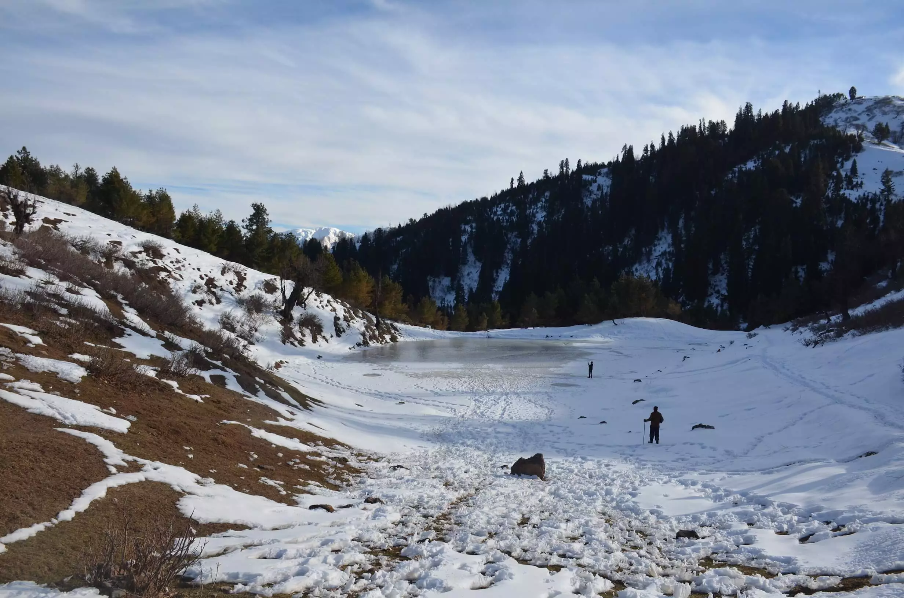

Siri Paye is a lush green meadow and is not easily accessible. It is located in the Shogran Valley, Khyber Pakhtunkhwa, Pakistan. It is at an elevation of 3,058m above the sea level. Shogran is the nearest hill station which is a beautiful tourist destination. Siri Paye is a combination of two Hindko words “Sar” and “Paya” which means “lake” and “high grazing ground” respectively. Usually, Paya is said to be a lush green meadow that is 3000 meters above sea level. If you are having any breathing problems then you should remain careful because as you hike up, the oxygen level starts to become thin.
.webp)
The natural beauty of Siri Paye Meadows captivates everyone. In winters, it is heavily coated with snow. while in summers, the lush green grass and meadow gives an alluring look. The local people are very humble and their hospitality gives you a sense of being at home. Siri Paye is accessible through Shogran, and Shogran is accessible from Kiwai. You can hire a jeep from Kiwai to reach Shogran. You will reach Shogran in 40 minutes and after that, you have to track on a steep and narrow road for 20 minutes to reach Siri Paye.
You will get a chance to visit Paye Lake in Siri Paye. Here, tourists enjoy horse riding and some adventure lovers go for camping too.